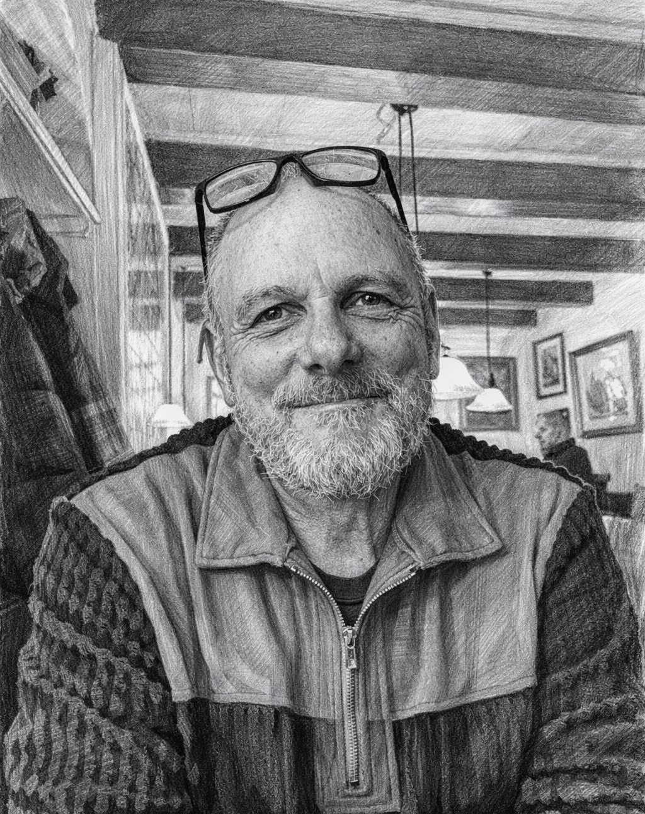
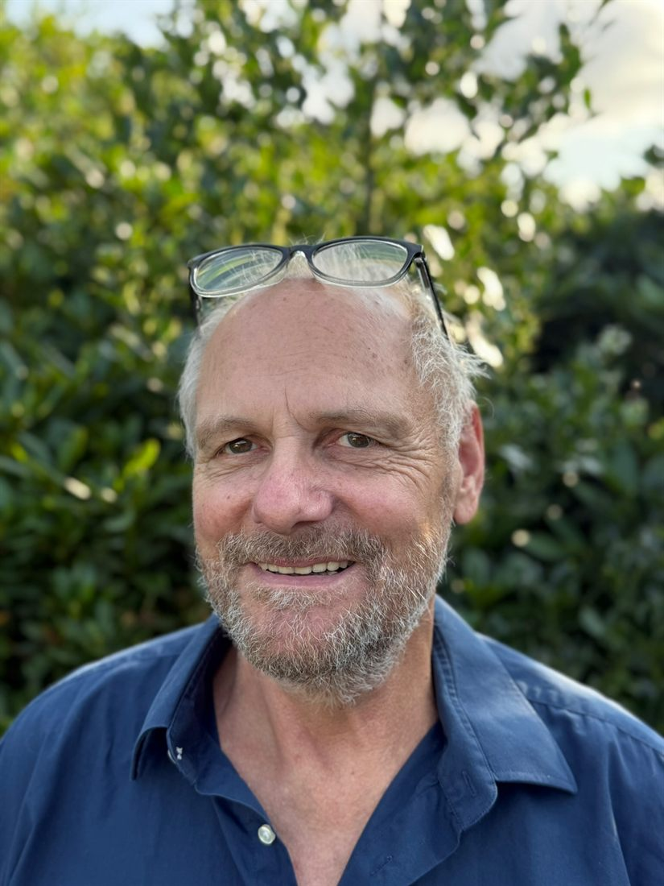
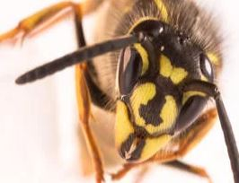
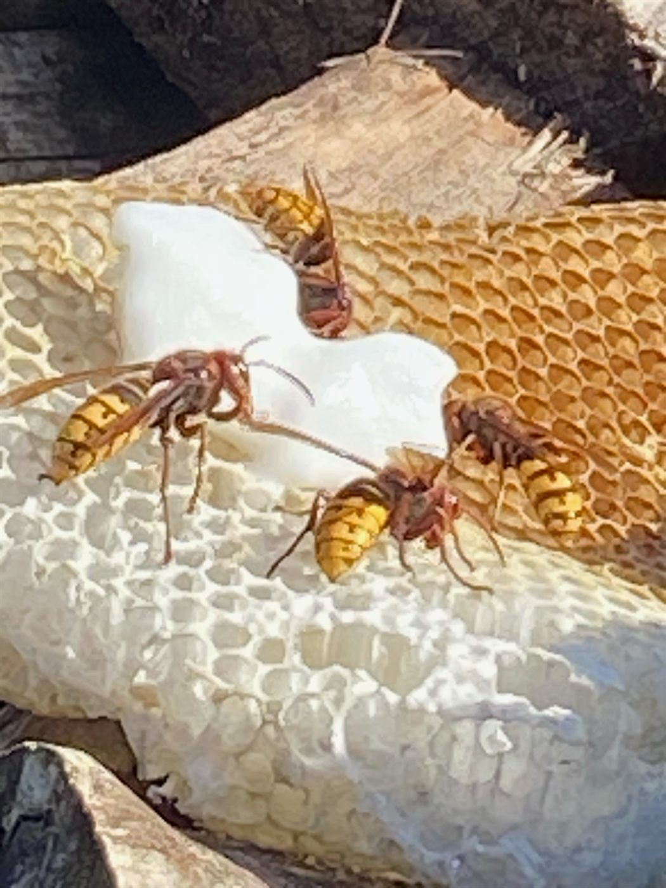
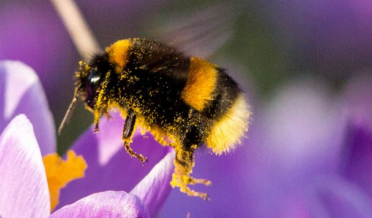
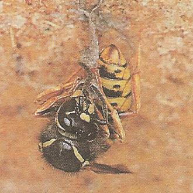
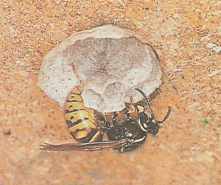
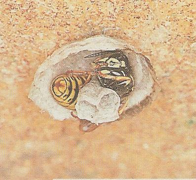
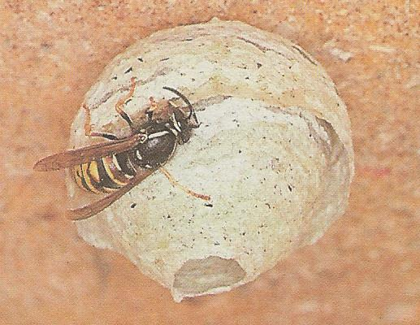

Wespen, Hornissen, Hummeln — wir lösen das Problem ohne zu töten. Hvepse, gedehamse, humlebier — vi løser problemet uden at dræbe. Wasps, hornets, bumblebees — we solve the problem without killing.
Umsiedlung, Aufklärung, im Notfall fachgerechte Bekämpfung. Seit 1992 in Norddeutschland — und nun auch in Süddänemark. Flytning, oplysning, fagkyndig bekæmpelse kun i nødstilfælde. Siden 1992 i det nordlige Tyskland — og nu også i Sønderjylland. Relocation, education and — only in emergencies — professional control. Since 1992 in Northern Germany, and now also in Southern Denmark.
✓ Seit 1992 erfahren ✓ Garantie ✓ Familienbetrieb ✓ Erfaren siden 1992 ✓ Garanti ✓ Familiefirma ✓ Experienced since 1992 ✓ Guarantee ✓ Family business


Ich bin Jürgen Hanika! Jeg er Jürgen Hanika! I'm Jürgen Hanika!
Seit 34 Jahren beschäftige ich mich täglich mit Wespen, Hornissen und Hummeln. Gegründet habe ich „Die Wespenexperten" aus einer einfachen Beobachtung:
I 34 år har jeg arbejdet dagligt med hvepse, gedehamse og humlebier. Jeg grundlagde „Hvepseeksperterne" ud fra en simpel observation:
For 34 years I've worked with wasps, hornets and bumblebees every day. I founded "The Wasp Experts" out of a simple observation:
Die meisten Insekten, die als „Schädlinge" gelten, sind keine. Sie sind nur am falschen Ort. De fleste insekter, der bliver kaldt „skadedyr", er det ikke. De er bare på det forkerte sted. Most insects considered "pests" aren't. They're just in the wrong place.
Mein Job: den richtigen Ort finden — für das Nest und für die Menschen, die damit leben.
Mit job: at finde det rigtige sted — både for reden og for de mennesker, der bor med den.
My job: to find the right place — for the nest and for the people living with it.
Inzwischen sind meine Söhne Julian und Merlin mit eigenen Firmen mit dabei — mit Standorten in Wedel und Schmalfeld bei Bad Bramstedt. Zusammen mit meinen Standorten in Süddänemark und Handewitt decken wir ganz Schleswig-Holstein, Hamburg und Süddänemark ab.
I dag er mine sønner Julian og Merlin også med — hver med sit eget firma — med kontorer i Wedel og Schmalfeld nær Bad Bramstedt. Sammen med mine lokationer i Sønderjylland og Handewitt dækker vi hele Slesvig-Holsten, Hamborg og Sønderjylland.
Today my sons Julian and Merlin are on board too, each with their own company — with locations in Wedel and Schmalfeld near Bad Bramstedt. Together with my locations in Southern Denmark and Handewitt, we cover all of Schleswig-Holstein, Hamburg and Southern Denmark.
Drei Spezialgebiete — sonst nichts. Tre specialer — intet andet. Three specialities — nothing else.

Wespen
Hvepse
Wasps
In den meisten Fällen reicht fachgerechte Entfernung oder Umsiedlung. Tötung nur, wenn anders nicht zu lösen.
I de fleste tilfælde er fagkyndig fjernelse eller flytning nok. Aflivning kun, hvis det ikke kan løses anderledes.
In most cases professional removal or relocation is enough. Killing only when there is no other way.

Hornissen
Gedehamse
Hornets
Hornissen sind streng geschützt. Wir holen die Genehmigung und siedeln das Nest um — niemals einfach „weg damit".
Gedehamse er beskyttede dyr. Vi vurderer hver sag individuelt og flytter reden — aldrig bare „væk med den".
Hornets are strictly protected. We obtain the permit and relocate the nest — never just "get rid of it".

Hummeln
Humlebier
Bumblebees
Hummeln stehen unter strengem Naturschutz und werden grundsätzlich umgesiedelt. Wir bringen das Nest sicher an einen neuen Standort.
Humlebier er fredede og flyttes altid. Vi bringer humleboet sikkert til en ny placering.
Bumblebees are strictly protected and are always relocated. We move the nest safely to a new location.
Wir helfen garantiert.
Vi hjælper garanteret.
We help — guaranteed.
Wenn wir nicht weiterhelfen können — durch Entfernen, Umsiedlung, Aufklärung oder Beratung — kostet es dich nichts.
Kan vi ikke hjælpe — hverken med fjernelse, flytning, oplysning eller rådgivning — koster det dig intet.
If we can't help — through removal, relocation, education or advice — it costs you nothing.
Wespen sind keine Schädlinge. Hvepse er ikke skadedyr. Wasps are not pests.
Wespen, Hornissen und Hummeln sind ein wichtiger Teil unseres Ökosystems. Sie bestäuben Pflanzen, halten andere Insekten in Schach, und ein Wespenstaat lebt nur wenige Monate — im Spätherbst stirbt er ohnehin von allein.
Hvepse, gedehamse og humlebier er en vigtig del af vores økosystem. De bestøver planter, holder andre insekter i skak, og en hvepsekoloni lever kun få måneder — om sensommeren dør den af sig selv.
Wasps, hornets and bumblebees are an important part of our ecosystem. They pollinate plants, keep other insects in check, and a wasp colony lives only a few months — by late autumn it dies on its own anyway.
Wir töten nicht. Wir lösen Konflikte. Vi dræber ikke. Vi løser konflikter. We don't kill. We resolve conflicts.
Meistens ist Umsiedlung, ein bisschen Geduld oder einfache Aufklärung die bessere Antwort als die Spritze.
I de fleste tilfælde er flytning, lidt tålmodighed eller simpel oplysning det bedre svar end sprøjten.
Most of the time, relocation, a little patience or simple explanation is the better answer than the spray.
Der Anfang: Eine Königin baut allein. Begyndelsen: En dronning bygger alene. The beginning: a queen builds alone.
Diese Bilder zeigen den Anfang im Frühjahr — wenn die Königin ganz allein ein neues Nest startet. Erst wenn die ersten Arbeiterinnen schlüpfen, übernehmen sie den weiteren Ausbau. Bis zum Spätsommer wächst das Nest dann auf ein Vielfaches dieser Anfangsgröße. Disse billeder viser begyndelsen om foråret — når dronningen ganske alene starter en ny rede. Først når de første arbejdere klækker, overtager de den videre udbygning. Hen mod sensommeren vokser reden til flere gange denne begyndelsesstørrelse. These pictures show the beginning in spring — when the queen starts a new nest entirely on her own. Only once the first workers hatch do they take over building it further. By late summer the nest then grows to many times this initial size.




Quelle: Rolf Witt Kilde: Rolf Witt Source: Rolf Witt
Wespen verstehen. Forstå hvepse. Understanding wasps.
Wer sie kennt, fürchtet sie weniger. Hier ein paar Grundlagen, die wir gerne erklären — bevor jemand zur Spritze greift. Den, der kender dem, frygter dem mindre. Her er nogle grundlæggende ting, vi gerne forklarer — før nogen tyr til sprøjten. Those who know them fear them less. Here are a few basics we're happy to explain — before anyone reaches for the spray.
Der Lebenszyklus eines Langkopfwespenvolks
En langhovedet hvepsekolonis livscyklus
The life cycle of a long-headed wasp colony
Soziale Wespen (Faltenwespen) bilden Staaten, die nur etwa ein halbes Jahr leben. Im Frühling — je nach Region und Art ab Anfang Mai — wacht die Königin aus ihrer Winterstarre auf und gründet ein neues Volk.
Jede aufgewachte Königin beginnt ganz allein, ein kunstvolles Nest zu bauen: erste Waben aus zerkautem Holz, in die sie die ersten Eier legt. Die Waben öffnen sich nach unten.
Aus den Eiern schlüpfen Larven, die mit Beute — vor allem Insekten — gefüttert werden. Nach etwa zwei Wochen spinnen sie einen Seidendeckel über ihre Zelle und verpuppen sich. Weitere zwei Wochen später schlüpfen die ersten Arbeiterinnen (sterile Weibchen) und übernehmen den Nestbau. Die Königin kümmert sich danach nur noch ums Eierlegen.
Je nach Art zieht der Staat zwischen Juni und August Männchen und neue Königinnen heran. Die Produktion von Arbeiterinnen kommt dabei zum Erliegen. Im August erreicht das Volk seinen Höhepunkt.
Danach beginnt das Sterben: Nahrungsmangel und sinkende Temperaturen führen dazu, dass zwischen Anfang September und Mitte Oktober alle Wespen ausgestorben sind — auch die alte Königin. Übrig bleiben nur die jungen, begatteten Königinnen.
Diese suchen ein Überwinterungsversteck (Ritzen, Erdlöcher, Totholz) und gründen im nächsten Frühjahr ein neues Volk. Aber: Nur etwa eine von zehn Königinnen überlebt den Winter und schafft es, ein Nest zu gründen.
Sociale hvepse (foldevinge-hvepse) danner kolonier, der kun lever omkring et halvt år. Om foråret — afhængigt af region og art fra begyndelsen af maj — vågner dronningen op af sin vinterdvale og grundlægger et nyt folk.
Hver opvågnet dronning begynder helt alene at bygge en kunstfærdig rede: de første celler af tygget træ, hvor hun lægger de første æg. Cellerne åbner sig nedad.
Af æggene klækker larver, som fodres med bytte — især insekter. Efter cirka to uger spinder de et silkelåg over deres celle og forpupper sig. To uger senere klækker de første arbejdere (sterile hunner) og overtager redebygningen. Dronningen koncentrerer sig herefter udelukkende om at lægge æg.
Afhængigt af arten begynder kolonien mellem juni og august at opdrætte hanner og nye dronninger. Produktionen af arbejdere går i stå. I august når folket sit populationsmaksimum.
Derefter begynder døden: Fødemangel og faldende temperaturer betyder, at alle hvepse mellem begyndelsen af september og midten af oktober er døde — også den gamle dronning. Kun de unge, parrede dronninger overlever.
De søger et overvintringssted (sprækker, jordhuller, dødt træ) og grundlægger næste forår en ny koloni. Men: Kun cirka én ud af ti dronninger overlever vinteren og lykkes med at grundlægge en rede.
Social wasps (paper wasps) form colonies that live only about half a year. In spring — depending on region and species, from early May — the queen wakes from her winter dormancy and founds a new colony.
Each awakened queen begins entirely alone to build an intricate nest: the first combs from chewed wood, in which she lays the first eggs. The combs open downwards.
Larvae hatch from the eggs and are fed with prey — mainly insects. After about two weeks they spin a silk lid over their cell and pupate. Another two weeks later the first workers (sterile females) hatch and take over building the nest. After that the queen only lays eggs.
Depending on the species, the colony raises males and new queens between June and August. Worker production stops. In August the colony reaches its peak.
Then the dying begins: lack of food and falling temperatures mean that between early September and mid-October all the wasps have died — including the old queen. Only the young, mated queens remain.
They look for a place to overwinter (cracks, holes in the ground, dead wood) and found a new colony the following spring. But: only about one in ten queens survives the winter and manages to found a nest.
Langkopfwespen — die friedlichen
Langhovedede hvepse — de fredelige
Long-headed wasps — the peaceful ones
Langkopfwespen interessieren sich nicht für Süßes oder Grillfleisch. Sie surren nicht um die Kaffeetafel — wenn du eine siehst, ist das in der Regel kein Problem.
Ihre Nester hängen frei, oft im Gebüsch, in Hecken oder im Efeu. Bei der Mittleren Wespe ockerfarben, bei anderen Arten grau und konisch zulaufend, mit einem oder zwei Einfluglöchern an der Spitze. Sie bauen sie auch auf Dachböden, in Schuppen oder unter Vorsprüngen.
Durchmesser etwa 25 cm, bis zu 200 Tiere. Lebenszyklus: Ende April bis Anfang/Mitte September. Die einzige süße Nahrung, die sie fressen, ist Fallobst.
Langhovedede hvepse interesserer sig ikke for sødt eller grillkød. De summer ikke ved kaffebordet — ser du en, er det som regel ikke et problem.
Deres reder hænger frit, ofte i buskads, hække eller efeu. Mellemhvepsen bygger okkergule reder, andre arter grå og konisk udformede med et eller to flyvehuller i spidsen. De bygges også på lofter, i skure eller under fremspring.
Diameter omkring 25 cm, op til 200 dyr. Livscyklus: slutningen af april til begyndelsen/midten af september. Den eneste søde føde, de spiser, er nedfaldsfrugt.
Long-headed wasps have no interest in sweets or barbecue meat. They don't buzz around the coffee table — if you see one, it's usually not a problem.
Their nests hang freely, often in bushes, hedges or ivy. Ochre-coloured in the median wasp, grey and conical in other species, with one or two entry holes at the tip. They also build them in attics, sheds or under overhangs.
Diameter about 25 cm, up to 200 animals. Life cycle: end of April to early/mid-September. The only sweet food they eat is windfall fruit.
Kurzkopfwespen — die „Nervensägen"
Korthovedede hvepse — „de irriterende"
Short-headed wasps — the "nuisances"
Wenn jemand sagt „die Wespen sind heute aggressiv", meint er fast immer diese zwei Arten: Deutsche Wespe (Vespula germanica) und Gemeine Wespe (Vespula vulgaris).
Diese Völker können bis zu 10.000 und deutlich mehr Tiere zählen — und an warmen Stellen im Haus überleben Nester bis in den November, durch die zunehmend milden Winter sogar bis in den Januar.
Ein häufiges Phänomen im Winter: Einzelne Wespen suchen sich Verstecke im gestapelten Brennholz. Wird das Holz ins warme Wohnzimmer geholt, wachen die Tiere durch die Wärme auf — und plötzlich fliegt eine Wespe mitten im Winter durchs Zimmer.
Was sie um Kaffeetafel und Grill bringt: Für die Brut brauchen sie Eiweiß (deshalb das Interesse an Wurst und Fleisch), für die anstrengende Jagd brauchen sie schnellen Brennstoff (deshalb der Heißhunger auf Zucker im August/September).
Ihre Nester gründen sie gerne in der Erde (daher „Erdwespen"), oder versteckt hinter Verschalungen oder im Dach. Oft erkennt man sie nur am Flugverkehr am Einflugloch.
Når nogen siger „hvepsene er aggressive i dag", mener de næsten altid disse to arter: Tysk hveps (Vespula germanica) og Almindelig hveps (Vespula vulgaris).
Disse kolonier kan tælle op til 10.000 og betydeligt flere dyr — og på varme steder inde i huset kan reder overleve helt ind i november, og som følge af de stadig mildere vintre endda ind i januar.
Et almindeligt fænomen om vinteren: Enkelte hvepse søger skjul i stablet brænde. Når brændet bringes ind i den varme stue, vækker varmen dyrene — og pludselig flyver en hveps gennem stuen midt om vinteren.
Hvorfor de optræder ved kaffebordet og grillen: Til ynglen har de brug for protein (derfor interessen for pølser og kød), og til den krævende jagt har de brug for hurtig energi (derfor sukkertrangen i august/september).
Deres reder bygger de gerne i jorden (deraf navnet „jordhvepse"), eller skjult bag beklædning eller på loftet. Ofte kan man kun se reden ud fra flyvetrafikken ved indgangen.
When someone says "the wasps are aggressive today", they almost always mean these two species: German wasp (Vespula germanica) and Common wasp (Vespula vulgaris).
These colonies can number up to 10,000 and considerably more animals — and in warm spots inside the house, nests survive into November, and because of the increasingly mild winters even into January.
A common phenomenon in winter: individual wasps find hiding places in stacked firewood. When the wood is brought into the warm living room, the warmth wakes the animals — and suddenly a wasp is flying through the room in the middle of winter.
What brings them to the coffee table and barbecue: for the brood they need protein (hence the interest in sausage and meat), and for their demanding hunting they need quick fuel (hence the craving for sugar in August/September).
They like to build their nests in the ground (hence "ground wasps"), or hidden behind cladding or in the roof. Often you can only spot them by the air traffic at the entry hole.
So läuft es ab. Sådan foregår det. How it works.
Foto schicken
Send et billede
Send a photo
Per WhatsApp (DE) oder SMS (DK). Damit sehen wir Art und Standort.
På SMS eller Messenger. Så ser vi art og placering.
Via WhatsApp (DE) or SMS (DK). That lets us see the species and location.
Festpreis
Fast pris
Fixed price
Meist innerhalb weniger Stunden, oft sofort.
Som regel inden for få timer, ofte med det samme.
Usually within a few hours, often immediately.
Termin
Aftal tid
Appointment
In der Regel 1–3 Tage. Akut auch am selben Tag.
Typisk 1–3 dage. Akutte sager også samme dag.
Usually 1–3 days. Urgent cases the same day.
Erledigt
Klaret
Done
Sauber, sicher, mit kurzer Erklärung, was wir gemacht haben und warum.
Rent, sikkert, med en kort forklaring af hvad vi har gjort og hvorfor.
Clean, safe, with a short explanation of what we did and why.
Häufige Fragen Ofte stillede spørgsmål Frequently asked questions
Wie schnell könnt ihr kommen? Hvor hurtigt kan I komme? How quickly can you come?
In der Regel innerhalb von 1–3 Tagen. Bei akuten Fällen — Nest direkt am Hauseingang, Wespen in der Wohnung, Allergiker im Haushalt — versuchen wir, am selben Tag zu kommen. Schick uns am besten ein Foto, dann sagen wir dir sofort, was geht.
Som regel inden for 1–3 dage. I akutte sager — rede direkte ved hoveddøren, hvepse inde i huset, allergikere i husstanden — prøver vi at komme samme dag. Send os et billede, så siger vi straks, hvad der kan lade sig gøre.
Usually within 1–3 days. In urgent cases — a nest right by the front door, wasps inside the home, an allergy sufferer in the household — we try to come the same day. Best to send us a photo, then we'll tell you straight away what's possible.
Ist das gefährlich für meine Kinder oder Haustiere? Er det farligt for mine børn eller kæledyr? Is it dangerous for my children or pets?
Nein. Bei einer Umsiedlung gibt es keine chemischen Rückstände — wir bringen das Nest einfach an einen neuen Platz. Falls in seltenen Fällen doch bekämpft werden muss, sagen wir dir vorher genau, wie lange du den Bereich meiden sollst. Meistens ein paar Stunden, nicht mehr.
Nej. Ved en flytning er der ingen kemiske rester — vi flytter bare reden til et nyt sted. Skulle bekæmpelse i sjældne tilfælde være nødvendig, fortæller vi dig præcist, hvor længe du skal undgå området. Som regel et par timer, ikke mere.
No. With a relocation there are no chemical residues — we simply move the nest to a new place. If in rare cases control is necessary, we'll tell you exactly how long to avoid the area beforehand. Usually a few hours, no more.
Was kostet es genau? Hvad koster det egentlig? What exactly does it cost?
Ein Standard-Wespennest kostet 160 € (1.250 DKK) als Festpreis — inklusive Anfahrt, Material und Arbeit. Hornissen und Hummeln sind individueller (Behördengang, Standort, Aufwand), deshalb bekommst du nach Foto und kurzer Rücksprache deinen festen Preis. Keine versteckten Kosten, keine Überraschungen.
Et standard hvepsebo koster 1.250 DKK (160 €) som fast pris — inklusiv kørsel, materialer og arbejdsløn. Gedehamse og humlebier er mere individuelle (myndighedsgodkendelse, placering, omfang), så du får din faste pris efter billede og kort samtale. Ingen skjulte omkostninger, ingen overraskelser.
A standard wasp nest costs 160 € (1,250 DKK) as a fixed price — including travel, materials and labour. Hornets and bumblebees are more individual (permits, location, effort), so you get your fixed price after a photo and a brief chat. No hidden costs, no surprises.
Muss ich zu Hause sein? Skal jeg være hjemme? Do I have to be home?
Nicht zwingend. Wenn wir an das Nest herankommen, ohne durch deine Wohnung zu müssen, machen wir das auch in deiner Abwesenheit. Du beschreibst kurz den Zugang, Bezahlung und Doku läuft danach per Telefon oder E-Mail.
Ikke nødvendigvis. Hvis vi kan komme til reden uden at gå gennem boligen, klarer vi det også i din fraværsperiode. Du beskriver kort adgangen — betaling og dokumentation klares bagefter pr. telefon eller e-mail.
Not necessarily. If we can reach the nest without going through your home, we'll do it in your absence too. You briefly describe the access; payment and documentation follow afterwards by phone or email.
Warum tötet ihr nicht einfach? Das geht doch schneller. Hvorfor dræber I ikke bare? Det er da hurtigere. Why don't you just kill them? That's faster, isn't it?
Weil Wespen, Hornissen und Hummeln keine Schädlinge sind. Sie sind wichtige Bestäuber und natürliche Schädlingsregulierer — ohne sie geht es uns allen schlechter. Hornissen und Hummeln sind außerdem gesetzlich streng geschützt; sie zu töten ist strafbar. Wir greifen zur Bekämpfung wirklich nur, wenn es keinen anderen Weg gibt. Meistens geht es anders — und das ist nicht teurer.
Fordi hvepse, gedehamse og humlebier ikke er skadedyr. De er vigtige bestøvere og naturlige regulerer af andre insekter — uden dem går det os alle dårligere. Gedehamse og humlebier er desuden beskyttede dyr. Vi griber kun til bekæmpelse, når der virkelig ikke er nogen anden vej. I de fleste tilfælde går det anderledes — og det er ikke dyrere.
Because wasps, hornets and bumblebees are not pests. They are important pollinators and natural pest regulators — without them we're all worse off. Hornets and bumblebees are also strictly protected by law; killing them is a criminal offence. We only resort to control when there really is no other way. Most of the time there is another way — and it's no more expensive.
Sind Hornissen nicht gefährlich? Er gedehamse ikke farlige? Aren't hornets dangerous?
Nein — im Gegenteil. Hornissen sind deutlich friedlicher als gewöhnliche Wespen. Sie meiden Menschen, interessieren sich nicht für Kuchen oder Limo, und ihr Stich ist nicht giftiger als der einer Honigbiene. Der schlechte Ruf stammt aus alten Geschichten, nicht aus der Realität. Trotzdem: ein Hornissennest direkt am Hauseingang oder Kinderzimmerfenster siedeln wir gerne um.
Nej — tværtimod. Gedehamse er væsentligt mere fredelige end almindelige hvepse. De undgår mennesker, interesserer sig ikke for kage eller saftevand, og deres stik er ikke giftigere end en honningbis. Det dårlige ry stammer fra gamle historier, ikke fra virkeligheden. Alligevel: et gedehamsebo direkte ved hoveddøren eller børneværelsesvinduet flytter vi gerne.
No — quite the opposite. Hornets are far more peaceful than ordinary wasps. They avoid people, have no interest in cake or soft drinks, and their sting is no more toxic than a honeybee's. The bad reputation comes from old stories, not from reality. Even so: a hornet nest right by the front door or a child's bedroom window we're happy to relocate.
Bekommt ihr wirklich jedes Nest weg? Får I virkelig hver rede væk? Do you really get every nest out?
In den allermeisten Fällen ja — auch in Rolladenkästen, Dachstühlen, Erdlöchern oder schwer erreichbaren Stellen. In den seltenen Fällen, wo es technisch nicht geht, sagen wir es offen und beraten dich kostenlos, was du sonst tun kannst. Das ist Teil unserer Garantie: Wir helfen — oder es kostet nichts.
I langt de fleste tilfælde ja — også i rullegardinkasser, tagkonstruktioner, jordhuller eller andre svært tilgængelige steder. I de sjældne tilfælde, hvor det teknisk ikke er muligt, siger vi det åbent og rådgiver dig gratis om, hvad du ellers kan gøre. Det er en del af vores garanti: Vi hjælper — eller det koster intet.
In the vast majority of cases, yes — even in roller-shutter boxes, roof structures, holes in the ground or hard-to-reach spots. In the rare cases where it's technically impossible, we say so openly and advise you free of charge on what else you can do. That's part of our guarantee: we help — or it costs nothing.
Kommt ihr auch abends oder am Wochenende? Kommer I også om aftenen eller i weekenden? Do you come in the evening or at weekends too?
Ja. Wir sind keine 9-bis-17-Uhr-Firma — Wespenpanik passiert selten zur Bürozeit. Ruf einfach an. Wenn wir gerade an einem anderen Nest arbeiten, melden wir uns schnellstmöglich zurück.
Ja. Vi er ikke et 9-til-17 firma — hvepsepanik sker sjældent i kontortiden. Ring bare. Er vi netop ved en anden rede, ringer vi hurtigst muligt tilbage.
Yes. We're not a 9-to-5 company — wasp panic rarely happens during office hours. Just call. If we're working on another nest, we'll get back to you as quickly as possible.
Wo arbeitet ihr — Servicegebiet? Hvor arbejder I — serviceområde? Where do you work — service area?
Die ganze Grenzregion: In Dänemark Sønderjylland von Rømø an der Westküste bis zur Ostküste. In Deutschland das nördliche Schleswig-Holstein — Schleswig-Flensburg und Nordfriesland (Flensburg bis Sylt) und bis runter nach Eckernförde.
Im näheren Umkreis kommen wir meistens spontan. Weiter weg (Richtung Eckernförde z. B.) stellen wir oft eine Tour mit mehreren Einsätzen zusammen — da kann es zu kurzen Wartezeiten kommen. Sag einfach Bescheid, wir finden eine Lösung.
Hele grænseregionen: I Danmark Sønderjylland — fra Rømø ved vestkysten til østkysten. I Tyskland det nordlige Slesvig-Holsten — Slesvig-Flensborg og Nordfrisland (Flensborg til Sild) og ned til Eckernförde.
I det nære område kommer vi som regel spontant. Længere væk (mod Eckernförde fx) samler vi ofte flere opgaver til en tur — der kan derfor være kort ventetid. Sig bare til, vi finder en løsning.
The whole border region: in Denmark Sønderjylland, from Rømø on the west coast to the east coast. In Germany northern Schleswig-Holstein — Schleswig-Flensburg and North Frisia (Flensburg to Sylt) and down to Eckernförde.
In the nearer area we usually come spontaneously. Further away (towards Eckernförde, for example) we often put together a tour with several jobs — so there may be short waiting times. Just let us know, we'll find a solution.
Was passiert mit dem Nest nach der Umsiedlung? Hvad sker der med reden efter flytningen? What happens to the nest after relocation?
Wir bringen es an einen geeigneten neuen Standort, weit weg von Menschen — Hornissen typisch in Nistkästen an Bäumen, Hummeln an einen geschützten Erdplatz, Wespen ähnlich. Das Volk hat dort die Chance, seinen Jahreszyklus normal zu beenden. Im Spätherbst stirbt der Staat ohnehin von selbst ab — nur die jungen Königinnen überwintern und gründen im nächsten Jahr neue Völker.
Vi bringer den til et egnet nyt sted, langt fra mennesker — gedehamse typisk i redekasser i træer, humlebier til et beskyttet sted i jorden, hvepse på lignende vis. Kolonien får dér mulighed for at gennemføre sin årscyklus normalt. Om sensommeren dør kolonien alligevel af sig selv — kun de unge dronninger overvintrer og grundlægger nye kolonier næste år.
We take it to a suitable new location, far from people — hornets typically into nest boxes on trees, bumblebees to a sheltered spot in the ground, wasps similarly. There the colony has the chance to complete its annual cycle normally. By late autumn the colony dies on its own anyway — only the young queens overwinter and found new colonies the following year.
Bezahlen mit MobilePay Betal med MobilePay Pay with MobilePay
Du kannst bequem mit MobilePay bezahlen — der gängigen Zahlungsmethode in Dänemark. Scanne den QR-Code mit deinem Handy oder tippe auf den Button, dann öffnet sich die MobilePay-App direkt.
Du kan nemt betale med MobilePay — den foretrukne betalingsmåde i Danmark. Scan QR-koden med din mobil eller tryk på knappen, så åbner MobilePay-appen automatisk.
You can conveniently pay with MobilePay — the common payment method in Denmark. Scan the QR code with your phone or tap the button to open the MobilePay app directly.
Den Betrag gibst du in der App selbst ein — nach Absprache. Beløbet indtaster du selv i appen — efter aftale. You enter the amount in the app yourself — as agreed.